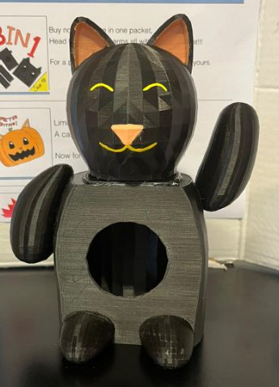
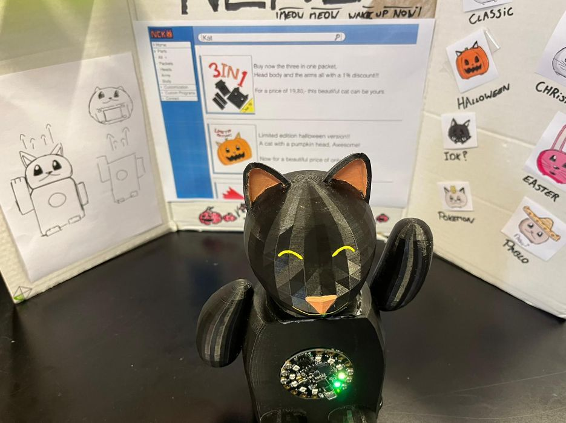
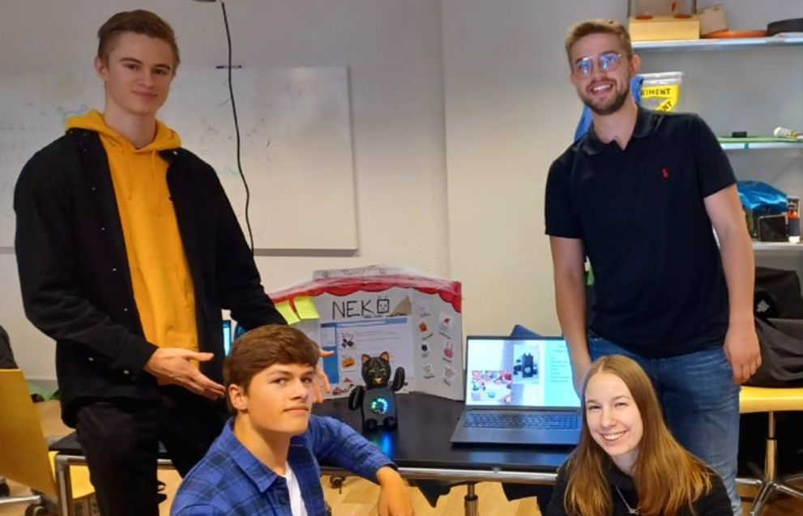
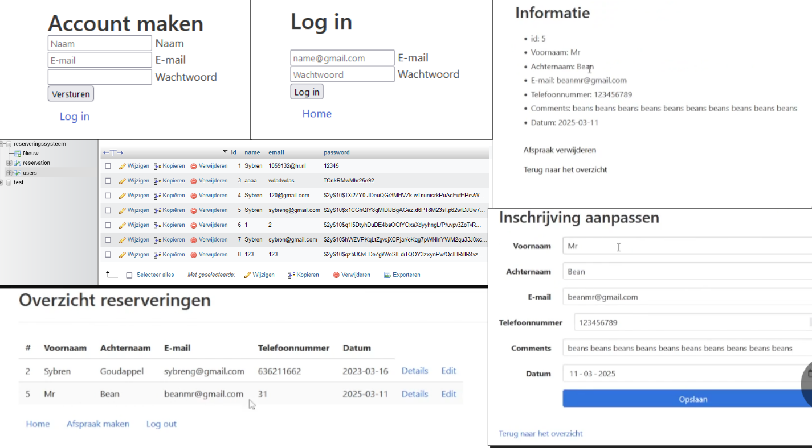
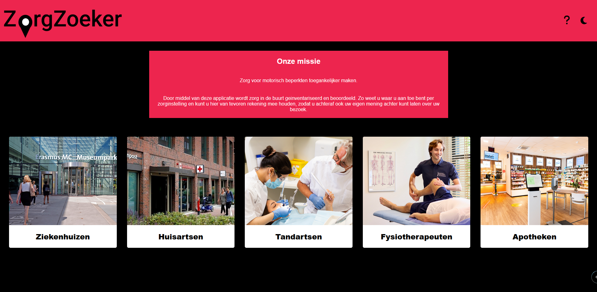
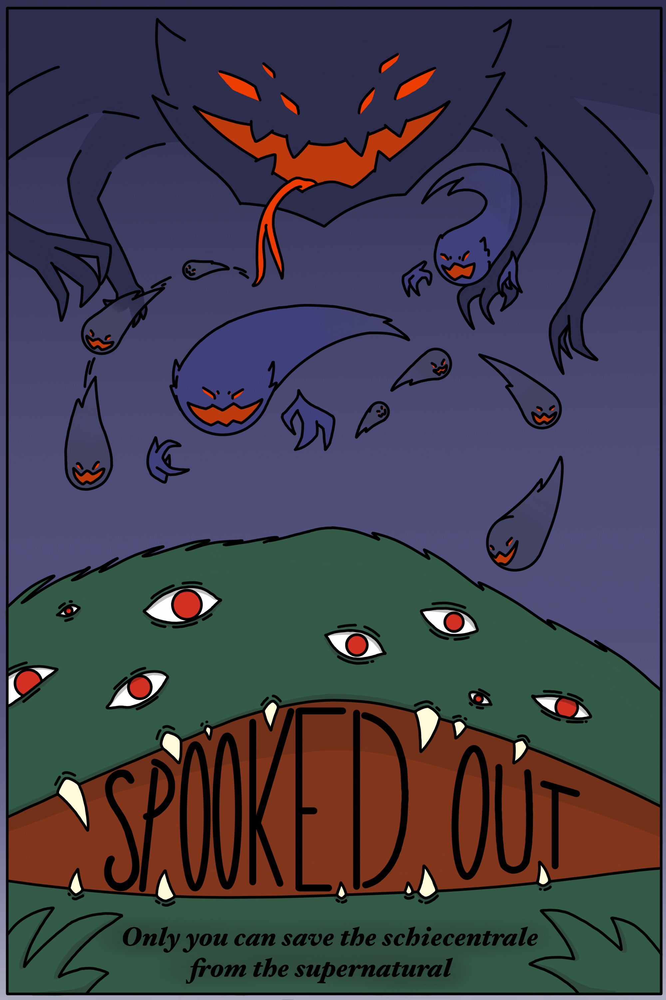

Periode 1:
In periode 1 moesten we een robot maken met de circuit playground. Ik heb dus samen met mijn groepje, Rody, Sharon, Rik en ik een lucky cat wekker (NekoClock) gemaakt.



De NekoClock is een vrij simpele wekker die je aan de hand van een aantal knoppen in kan stellen op een aantal uur. Zodra de tijd op is zal de wekker muziek gaan afspelen en gaan er allerlei lichtjes branden. We hebben voor deze lichtjes verschillende standen gemaakt, zo kan je bijvoorbeeld natuurlijk ontwaken instellen, de lichtjes worden dan dus langzamerhand steeds feller. Maar ook hebben we een speciaal Halloween thema met 'Spooky Scary Skeletons' muziek gemaakt.
Voor dit project heb ik dus ook een van mijn persoonlijke interesses kunnen toepassen, namelijk Blender. Blender is 3D modeling software en deze heb ik dus gebruikt om de kat voor de NekoClock te maken.
Periode 2:
In periode 2 moesten we een reserveringssysteem website maken voor een client, we moesten dus PHP gebruiken voor de backend. Dit was een individueel project.

Het is mij gelukt om dit te doen, mijn website is niet erg mooi, maar wel functioneel. Je kan dus een account aanmaken, hierop inloggen, dan kan je afspraken maken, deze kan je dan in een overzicht bekijken en aanpassen.
Periode 3:
In periode 3 moesten we een webservice maken voor motorisch beperkten, ik moest dit doen met Ward, Rayel, en Lotte. Wij hebben onze webservice 'Zorgzoeker' genoemd.

Met onze Zorgzoeker kunnen motorisch beperkten makkelijk toegankelijke zorglocaties in de buurt vinden. Verder kunnen ze deze toevoegen aan hun favorieten en is er ook een maps integratie en dark mode aanwezig.
Periode 4:
In periode 4 moesten we een game maken in ExcaliburJS, ik heb dit samen met mijn groepje gedaan, Mats, Rik en Lindsey. Wij hebben een dungeon crawler gemaakt genaamd 'Spooked Out!', hieronder kun je het spel spelen!
Spooked Out! (link)

In dit spel versla je geesten in de Schiecentrale, de kamers van de dungeon zijn randomly generated. Je kan door het verslaan van bosses upgrades krijgen om nog sterker te worden. Het doel is om zoveel mogelijk geesten te verslaan en een zo hoog mogelijke kamer te behalen om zo een highscore neer te zetten.
Ik vind Dungeon Crawler games een van de leukste game genres dus was het ook erg leuk om er zelf een te kunnen maken.